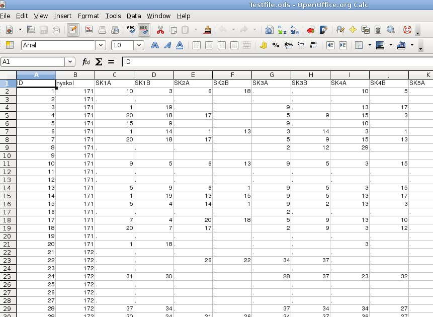

About
This program parses a file consisting of survey info. It summarizes the number of times
each student in a class has been nominated while excluding self-nominations and cross class nominations.
The program also calculates percentages, averages, standard deviations and individual differences.
The excel file
The excel file being used to create the input file for the program should look like this:

The First column is the student id, the second the class of the student and third column and forward
is the students answer to the question mentioned in the top row in the same column. (Ex. In the picture above,
student with id 1 in class 171 nominated student with id 10 in class 171 for question SK1A)
The first row is the header row which must contain the question names (SK1A, SK1B and so on). The header
text for the id and class columns are not used but should still be present for clarity.
The input file
For the program to be able to process this file, it must be converted from Excel-format to text format.
- If you are using Excel, choose File -> Save As and as file type select Text (Tab delimited).
- If you are using OpenOffice, choose File -> Save As and select Text CSV as file type. Make sure that no text delimiter is set.
That is, the value for text delimiter should be blank. If it is not, the program will not parse the
resulting file correctly. The Field delimiter should be set to {tab}.
When saved a text version of the Excel file will be created that can be parsed by the program.
Program prerequisites
The file parser is written in C# using Gtk# which means some packages have to be installed on your computer
before it can be run.
If not already installed, the .NET environment can be downloaded from
here.
When .NET is installed, download Gtk# for .NET from
here and install it.
Without these packages installed, the program will not run.
Usage
Unpack the program anywhere on your computer. No installation is required. After starting the program
by double clicking its icon, select the text file you created earlier by choosing File->Open or clicking
the Open button. Now click the Parse button to process the file. When this is done,
you can either view the results in the text window by pressing the View button, and/or save the results
to a file by clicking on the Save button. The saved file will be placed in the same directory as the input file.
You can now open the results file in Excel or OpenOffice. If you are using OpenOffice, when importing set the field delimiter
to {tab} (Since this was what was set as delimiter when exporting the file, and is what the program uses as delimiter)
and the data should be imported correctly.
Download
Get the program here.
Questions/Bugs
Send questions or bug reports to anders DOT linden AT gmail DOT com. Be sure to supply the version number of the program
which can be found by double clicking About item in the program main window.
Should you want to have the source code for the program it can also be provided.